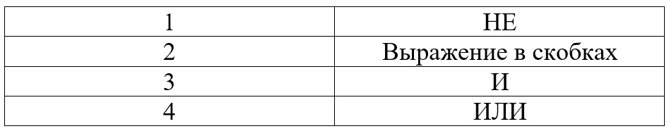

Сейчас я покажу вам решение первых 5-ти заданий первой части ОГЭ по информатике:
Задание №1
Для решения этого задания важно знать таблицу перевода различных единиц информации. Бит, байт, кбайт, Гбайт:
Допустим в задании сказано: В кодировке UTF-32 каждый символ кодируется 32 битами. Миша написал текст (в нем нет лишних пробелов): «Айва, Алыча, Генипа, Гуарана, Курбарил, Мангостан — фрукты». Ученик вычеркнул из списка название одного из фруктов. Заодно он вычеркнул ставшие лишними запятые и пробелы — два пробела не должны идти подряд. При этом размер нового предложения в данной кодировке оказался на 36 байтов меньше, чем размер исходного предложения. Напишите в ответе вычеркнутое название фрукта.
Решение:
Поскольку один символ кодируется четырьмя байтами (т.к. по условию один символ равен 32 битам, следовательно, 4 байтам), из текста удалили 9 символов.
Лишние запятая и пробел занимают восемь байтов(т.к. 1 символ 32 бита ,следовательно, 8 байтам).
Значит, название фрукта, которое удалили из списка, должно состоять из 7 букв, поскольку (36 − 8) : 4 = 7 символов.
Из всего списка только одно название фрукта состоит из 7 букв - Гуарана.
Ответ: Гуарана.
Задание №2
Советую выполнять это задание с особой внимательностью!!! Важно правильно прочитать задание и понять, что от вас требуют.
Это задание проще всего выполнять слева направо, но также можно выполнять и справа налево.
Важно знать, что ответ не всегда может состоять из цельного слова, т.е. вместо него может быть набор любых букв!!!
Решение:
От разведчика была получена следующая шифрованная радиограмма, переданная с использованием азбуки Морзе:
При передаче радиограммы было потеряно разбиение на буквы, но известно, что в радиограмме использовались только следующие буквы:
Определите текст радиограммы. В ответе укажите, сколько букв было в исходной радиограмме.
Решение: Радиограмма расшифровывается: АДЛТДТАТ. Следовательно, в исходной радиограмме было восемь букв.
Ответ: 8.
Задание №3
Для выполнения 3 задания важно знать логические операции:
Таблица истинности для союза И:
Союз И служит алгебраическим умножением в информатике.
Таблица истинности для союза ИЛИ:
Союз ИЛИ служит алгебраическим сложением в информатике.
Таблица истинности для союза НЕ:
НЕ перед скобками с общим выражением.
Таким образом НЕ – это логическая операция, которая делает ложное высказывание истинным и на оборот. Меняет не строгое неравенство на строгое и на оборот.
Важен порядок выполнения операции!!!

Задача 1 типа:
Напишите наибольшее натуральное число Х, для которого ИСТИННО высказывание (x < 7) И НЕ (x < 6).
Логическое «И» ложно тогда, когда ложно одно из высказываний. Запишем выражение в виде:
(x < 7) И (x >= 6) наибольшее число, для которого высказывание будет 6.
Ответ: 6
Задача 2 типа:
Напишите наименьшее целое число Х, для которого истинно высказывание: НЕ (X <= 8) И НЕ (X >= 15) И (X четное).
Запишем выражение в виде (X > 8) И (X < 15) И (X четное)
Значит, наименьшее число, для которого высказывание будет истинным — 10
Ответ: 10
Задача 3 типа:
Для какого целого числа Х ЛОЖНО высказывание: (X > 3) ИЛИ НЕ (X > 2).
Логическое «ИЛИ» ложно только тогда, когда ложны оба высказывания. Запишем выражение в виде: (X > 3) ИЛИ (X ≤ 2)
Значит, число, для которого высказывание будет ложным — 3
Ответ: 3
Задание №4
Четвёртое задание имеет в себе 2 типа решений в зависимости от условий
1 Тип:
Решим это задание: Между населенными пунктами А, В, С, D, Е, F построены дороги, протяженность которых (в километрах) приведена в таблице:
Определите длину кратчайшего пути между пунктами А и F. Передвигаться можно только по дорогам, протяженность которых указана в таблице.
Решение:
Найдем все варианты маршрутов из A в E и выберем самый короткий.
Из пункта A можно попасть в пункты B, C, F.
Из пункта B можно попасть в пункт C.
Из пункта C можно попасть в пункты D, E.
Из пункта D можно попасть в пункт F.
Из пункта E можно попасть в пункт F.
A—F: длина маршрута 15 км.
A—B—C—E—F: длина маршрута 15 км.
A—B—C—D—F: длина маршрута 14 км.
A—C—E—F: длина маршрута 14 км.
A—C—D—F: длина маршрута 13 км. Самый короткий путь: A—C—D—F. Длина маршрута 13 км.
Ответ: 13.
2 Тип:
Иван-Царевич спешит выручить Марью-Царевну из плена Кощея. В таблице указана протяженность дорог между пунктами, через которые он может пройти.
Укажите длину самого длинного участка кратчайшего пути от Ивана-Царевича до Марьи-Царевны (от точки И до точки М).
Передвигаться можно только по дорогам, указанным в таблице:
Решение:
Найдем все варианты маршрутов из И в М и выберем самый короткий.
Из пункта И можно попасть в пункты А, Б, Г, М.
Из пункта Г можно попасть в пункты И, М.
Из пункта В можно попасть в пункты А, Б.
Из пункта Б можно попасть в пункты В, И, М.
И—А—В—Б—М: длина маршрута 7 км.
И—Б—М: длина маршрута 4 км.
И—Г—М: длина маршрута 7 км.
И—М: длина маршрута 8 км. Самый короткий путь: И—Б—М. Длина маршрута 4 км. Самый длинный участок этого пути равен 3 км.
Ответ: 3
Задание №5
5 задание имеет в себе 2 типа решений в зависимости от условий
1 Тип:
У исполнителя Квадратор две команды, которым присвоены номера:
1. прибавь 1
2. возведи в квадрат
Первая из них увеличивает число на экране на 1, вторая возводит его во вторую степень.
Составьте алгоритм получения из числа 3 числа 84, содержащий не более 5 команд. В ответе запишите только номера команд.
Если таких алгоритмов более одного, то запишите любой из них.
Решение:
Это задание легко можно решить способом подбора:
32 = 9
9+1 = 10
102 = 100 дальше у нас не получиться решить поскольку нам надо получить 84 возводя полученные числа в квадрат или прибавляя к ним 1. Мы ошиблись начинаем заново.
32 = 9
92 = 81
81+1 = 82
82+1 = 83
83+1 = 84 мы получили искомое число. В ответе запишем порядок действий ,которые мы совершали. В бланк ответов важно записывать числа без пробелов в каждой клетке без точки.
Ответ: 22111
2 Тип:
Во 2 типе нам уже даны команды, нам стоит подставить число в неизвестную команду. Решим это задание:
У исполнителя Квадратор две команды, которым присвоены номера:
1. возведи в квадрат
2. прибавь b
(b — неизвестное натуральное число)
Первая из них возводит число на экране во вторую степень, вторая прибавляет к числу b. Программа для исполнителя — это последовательность номеров команд.
Известно, что программа 12212 переводит число 2 в число 37. Определите значение b.
Решение:
Решим это задание способом подстановки, начнем с 1. Во время решения учитываем порядок, который указывался в условии.
22 = 4
4+1 = 5
5+1 = 6
62 = 36
36+1 = 37
В ответе записываем то, что нужно было найти
Ответ: 1